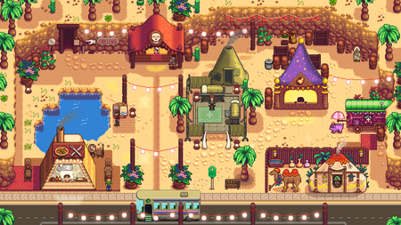
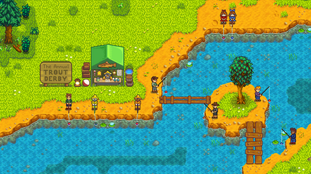
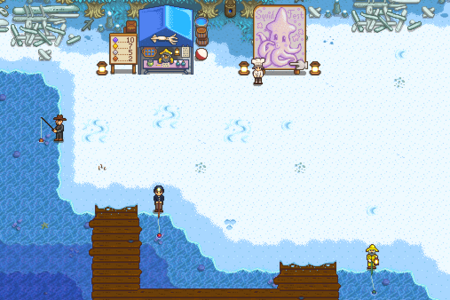

Get Involved!
With a wide range of exciting events year-round,
engage in fishing, mining, farming, and more!
Check our events board!
I've attached a version of our local calendar so you folks can keep up do date with the comings and goings of the valley!
All the little flag and star icons represent festivals, the little hooks represent fishing events. You can find descriptions of each event by season below.
P.S Each villager icon represents their birthday! if you go click on their profile in the villagers tab you can see all their favourite gifts!


The Egg Festival takes place on the 13th of every Spring in Pelican Town Square between 9am and 2pm. The featured attraction of the Egg Festival is the Egg Hunt. If you choose to participate you and some other villagers will have 50 seconds to search for small colored eggs hidden around Pelican Town. The winner will receive the prized Straw Hat as a reward the first year they win, and a Prize Ticket afterwards. There is also a locally run booth where you can purchase some exclusive Egg Festival goodies and Decor!

The Desert Festival takes place in the Desert during Spring 15-17, from 10am to 2am.During the festivale there are specialty villager pop up shops, a specialty food truck, a series of races and tons of fun challenges to complete for event currency, Calico eggs! There is also a daily opportunity to receive a free makeover from Emily.
The Flower Dance event takes place on the 24th of every Spring in Cindersap Forest between 9am and 2pm. The dance takes place in the far west of the forest, across the bridge that is accessible only during the Flower Dance. During this festival, you can invite one of the bachelors or bachelorettes to dance with you! Though a warning, the Flower Dance is a big deal, and villagers will only dance with you if theyve gotten to know you a bit already. There is also a booth set up where the player can purchase some spring items!

The Luau takes place on the 11th of every Summer at the beach between 9am and 2pm. A central feature of the Luau is the potluck soup. Villagers bring different ingredients to prepare this soup for the Governor, who tastes and judges it.

The Trout Derby takes place during Summer 20-21 in Cindersap Forest near the river below Marnie's Ranch. It starts at 6:10am and ends at 2am. Players can catch Rainbow Trout all day long in the Cindersap Forest river. Each Rainbow Trout caught has a chance to give a Golden Tag. Golden Tags can be exchanged for prizes at the derby booth.
The Dance of the Moonlight Jellies takes place on the 28th of every Summer. The festival takes place at the beach between 10pm and 12am. During the festival, villagers gather at the docks to watch migrating jellyfish who are attracted to the light of a torch that Mayor Lewis lights.

The Stardew Valley Fair takes place on the 16th of Fall every year in Pelican Town between 9am and 3pm. There are several games where you can gain Star Tokens, a currency that can be exchanged for prizes at the Shop near the entrance to the Bus Stop. The Fair also has a Grange Display contest where you can show off the products of the farm and gain Star Tokens!

The Spirit's Eve festival takes place on the 27th of Fall every year in Pelican Town between 10pm and 11:50pm. The festival features a maze where it is possible to obtain valuable secret prize. Theres also a pop up shop featuring some exclusive Spirit's Eve items.

The Festival of Ice takes place on the 8th of every Winter in Cindersap Forest between 9am and 2pm.At the festival there are ice sculptures and igloos set up as well as a small shop selling festive decorations. There's also an Ice Fishing Contest that you can take part in along with several of the villagers.

The SquidFest takes place during Winter 12-13 on the Beach. It starts at 6:10am and ends at 2am. Depending on how much Squid you catch you'll be able to win a wide variety of prizes throughout the festival with different prizes each day.
The Night Market takes place during Winter 15-17, on the Beach, from 5pm-2am.The festival features shops, a mermaid show, and a deep-sea fishing submarine where you can catch unique fish.

The Feast of the Winter Star takes place on the 25th of every Winter in Pelican Town between 9am and 2pm. The main event of the Feast of the Winter Star is the secret santa gift giving ceremony.